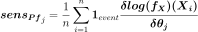
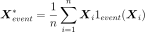
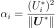
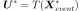
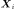
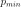
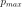
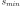
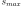

SimulationSensitivityAnalysis¶
- class SimulationSensitivityAnalysis(*args)¶
Class to perform a sensitivity analysis based on a reliability event.
- Available constructor:
SimulationSensitivityAnalysis(event, inputSample, outputSample)
SimulationSensitivityAnalysis(event)
SimulationSensitivityAnalysis(simulationRes)
- Parameters
- event
RandomVector An event which it composite (test is with the method
isComposite).- inputSample, outputSample2-d sequence of float
Input sample and output sample of a model evaluated apart.
- simulationRes
ProbabilitySimulationResult A simulation result.
- event
Notes
The simulation sensitivity analysis is based on:
in the first usage, the inputSample and outputSample given:
in the second usage, the samples which have been stored by the function defining the event. Care if the sample is not a statistical sample: post treatment proposed by the object might not be right.
in the third usage, the samples generated by the
EventSimulationthat produced simulationRes.
Methods
Compute the sensitivity to the probability.
computeImportanceFactors(*args)Compute the importance factors.
Accessor to the mean point.
Draw the importance factors.
drawImportanceFactorsRange(*args)Draw the importance factors evolution.
Accessor to the object's name.
Accessor to the comparison operator.
getId()Accessor to the object's id.
Accessor to the input sample.
getName()Accessor to the object's name.
Accessor to the output sample.
Accessor to the object's shadowed id.
Accessor to the threshold.
Accessor to the isoprobabilistic transformation function.
Accessor to the object's visibility state.
hasName()Test if the object is named.
Test if the object has a distinguishable name.
setName(name)Accessor to the object's name.
setShadowedId(id)Accessor to the object's shadowed id.
setVisibility(visible)Accessor to the object's visibility state.
- __init__(*args)¶
- computeEventProbabilitySensitivity()¶
Compute the sensitivity to the probability.
The sensitivity of the probability Pf wrt the distribution parameters
 is written:
is written:
- Returns
- sensitivity_pf
PointWithDescription The probability sensitivity.
- sensitivity_pf
- computeImportanceFactors(*args)¶
Compute the importance factors.
- Returns
- impFactors
PointWithDescription The importance factors.
- impFactors
Notes
The importance factors, given in (2), are evaluated from the coordinates of the mean point (1) of the event domain, mapped into the standard space as follows:
(1)¶
(2)¶
where

Be careful: this notion is only valid for
MonteCarloorLHSsampling as the mean is evaluated from the equation (2) (only uniform weights over the realizations .
- computeMeanPointInEventDomain(*args)¶
Accessor to the mean point.
- Returns
- mean
Point The mean point in the failure domain.
- mean
Notes
This method computes the mean point in the physical space of all the simulations generated by the simulation that failed into the event domain.
Be carefull: this notion is only valid for Monte Carlo or LHS sampling as the mean is evaluated from the equation (1) (only uniform weights over the realizations .
- drawImportanceFactors()¶
Draw the importance factors.
- Returns
- graph
Graph Graph containing the pie corresponding to the importance factors of the probabilistic variables.
- graph
- drawImportanceFactorsRange(*args)¶
Draw the importance factors evolution.
- Parameters
- probabilityScaleboolean
Set True if the limits are the probability levels; set False if the limits are the thresholds defining the event.
- lower, upperfloats
Define the boundaries of the probability levels  and  or those of the thresholds  and .
- Returns
- getClassName()¶
Accessor to the object’s name.
- Returns
- class_namestr
The object class name (object.__class__.__name__).
- getComparisonOperator()¶
Accessor to the comparison operator.
- Returns
- operator
ComparisonOperator The comparison operator.
- operator
- getId()¶
Accessor to the object’s id.
- Returns
- idint
Internal unique identifier.
- getName()¶
Accessor to the object’s name.
- Returns
- namestr
The name of the object.
- getShadowedId()¶
Accessor to the object’s shadowed id.
- Returns
- idint
Internal unique identifier.
- getThreshold()¶
Accessor to the threshold.
- Returns
- sfloat
The threshold.
- getTransformation()¶
Accessor to the isoprobabilistic transformation function.
- Returns
- transformation
Function The isoprobabilistic transformation function.
- transformation
- getVisibility()¶
Accessor to the object’s visibility state.
- Returns
- visiblebool
Visibility flag.
- hasName()¶
Test if the object is named.
- Returns
- hasNamebool
True if the name is not empty.
- hasVisibleName()¶
Test if the object has a distinguishable name.
- Returns
- hasVisibleNamebool
True if the name is not empty and not the default one.
- setName(name)¶
Accessor to the object’s name.
- Parameters
- namestr
The name of the object.
- setShadowedId(id)¶
Accessor to the object’s shadowed id.
- Parameters
- idint
Internal unique identifier.
- setVisibility(visible)¶
Accessor to the object’s visibility state.
- Parameters
- visiblebool
Visibility flag.